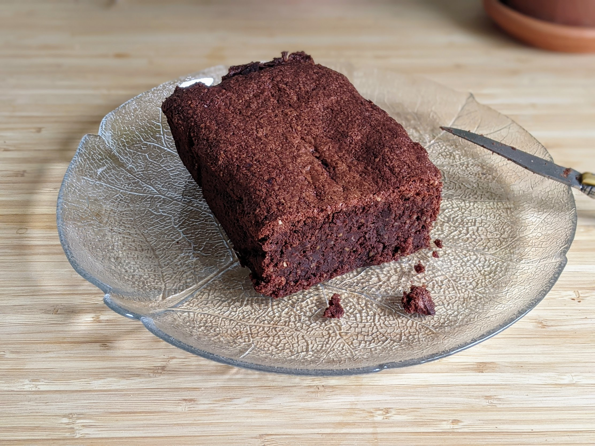

Brownie au miso

Pour un brownie :
- 230g de beurre
- 20g de cacao
- 250g de chocolat bien noir
- 150g de cassonnade
- 150g de sucre blanc
- Quatre oeufs
- Un sachet de sucre vanillé
- 130g de farine
- Une cuillère à soupe de pâte de miso
- Faire fondre le beurre avec le chocolat et le cacao dans une casserole à feu très doux. Ajouter le miso quand ça a presque fini de fondre, mélanger pour incorporer, et retirer du feu (le tout devrait finir de fondre sans avoir besoin de plus de chaleur).
- Faire préchauffer le four à 180°C. Ajouter les sucres dans la casserole en mélangeant doucement à la cuillère en bois, puis les œufs un par un, puis la farine et le sel. Pas besoin que ça soit complètement homogène.
- Beurrer un moule et le recouvrir de papier sulfurisé, verser la pâte, et enfourner une vingtaine de minutes. Sortir du four dès que le centre commence à ne plus être trop liquide, déguster une fois refroidi.